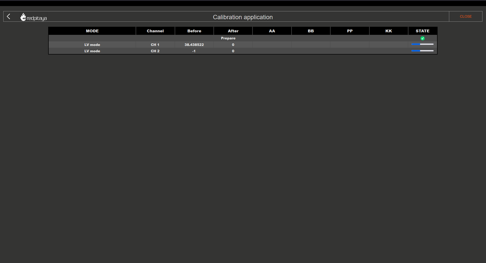

3.3.4. Calibration
Note
The calibration application does not affect the SDRlab 122-16.
To open the Calibration application click on System Tools and then select Calibration.


When the Calibration application opens, you will see four options:

3.3.4.1. DC Calibration
With the DC calibration, you can fine-tune Red Pitaya’s ADCs and DACs.
Required materials:
two good-quality SMA or BNC cables (with appropriate adapters in case of BNC cables)
two SMA T adapters
Short termination
Accurate Volage reference source (the more accurate the voltage source, the better the calibration)
Accurate Multimeter (optional)
3.3.4.1.1. Auto DC calibration
Auto DC calibration will guide you step-by-step through the calibration process and is the option we recommend for beginners.
Step-by-step video guide:
The YouTube video is also available on this link.
3.3.4.1.2. Manual DC calibration
Manual DC calibration will let you do the calibration manually and fine-tune all the variables. Apart from calibration, this option will also allow you to identify any parasitics on your measurement lines.

RESET:
DEFAULT - reset all offset values to 0 and gain values to 1
FACTORY - reset the board to the factory calibration parameters
APPLY the calibration - save the DC offset in the system settings
CLOSE the calibration
When closing the application without saving the values, the following prompt will appear:

3.3.4.1.2.1. ADC calibration parameters

Voltage measurements (Mean, minimum, maximum, and peak-to-peak). Displayed in the graph with the corresponding colour.
Sine wave detection. Detects wheter a sine wave is present on the channel. The “x” indicates how many sine periods were detected.
ADC Offset. Change the offset by the number in the middle. The amount can be selected from the dropdown menu.
ADC Gain. Change the gain by the number in the middle. The amount can be selected from the dropdown menu.
LV/HV. Select the calibration voltage range. Should be the same as the input jumpers.
LAST/AVG. Select either the last or average voltage measurements.
Decimation. Select the decimation from the dropdown menu.
3.3.4.1.2.2. DAC calibration parameters

ON/OFF. Turn the specified output ON or OFF.
DAC settings. Change the output waveform (type), frequency, amplitude, and offset.
DAC Offset. Change the offset by the number in the middle. The amount can be selected from the dropdown menu.
DAC Gain. Change the gain by the number in the middle. The amount can be selected from the dropdown menu.
3.3.4.2. Frequency calibration
Required materials:
two good-quality SMA or BNC cables (with appropriate adapters in case of BNC cables)
one SMA T adapter
External reference function generator capable of generating at least +-10 V (Optional)
3.3.4.2.1. Auto Frequency calibration
Auto Frequency calibration will guide you step-by-step through the calibration process and is the option we recommend for beginners.
Step-by-step guide:
Once the auto frequency calibration is started, you will be presented with the following window:

The header columns represent the following:
MODE - correlates to how the jumpers should be set.
Channel - indicates which channel the subsequential column settings apply to.
Before and After - values before and after the calibration.
AA, BB, PP, and KK - coefficients for the filter inside the FPGA that affects the inputs. For more details, please refer to the “Manual Frequency calibration” section.
STATE - displays the progression of the calibration process.
Please pay attention to the STATE column, as clickable buttons which progress the process will appear.
LV calibration:

Clicking on the “START” button will provide further instructions and a choice between an internal and external reference generator:

Please select “INTERNAL” if you do not have an external reference generator. Red Pitaya will use OUT1 to generate a 0.9 Volt 1 kHz Square signal.
Set the jumpers to the LV position and connect OUT1 to IN1 and IN2 using the SMA cables and the T adapter.
Click on Calibrate button to start the calibration process.

Please configure the external reference generator to produce a 1 kHz square signal and input the “reference voltage” (one-way amplitude) of the signal.
Set the jumpers to the LV position and connect the output of the external generator to IN1 and IN2 of the Red Pitaya using SMA or BNC cables and the T adapter.
Click on Calibrate button to start the calibration process.
LV calibration in progress:
Please wait until the LV calibration is finished.
HV calibration:

Change the jumpers to the HV position and choose the generator source.

The external reference generator amplitude should be changed by at least a factor of 10 to a maximum of 20 Volts.
HV calibration in progress:

Please wait until the HV calibration is finished.
Save calibration values:

Finish the calibration:

Clicking on the “DONE” button will return you to the starting screen of the Calibration application.
{kind=link}
{kind=link}
3.3.4.2.2. Manual Frequency calibration
Manual Frequency calibration will let you do the calibration manually and fine-tune all the variables. Apart from calibration, this option will also allow you to identify any parasitics on your measurement lines.

SETTINGS MENU - APPLY the calibration parameters, restore the DEFAULT parameters, or CLOSE the manual frequency calibration.
CHANNEL & JUMPER SETTINGS - Choose a channel and voltage range (LV or HV depending on the jumper settings) to calibrate.
CALIBRATION PARAMETERS - Choose between DEC and HEX values, click on AUTO to perform an automatic frequency calibration, and input the FPGA filter coefficients.
GENERATOR SETTINGS - Turn the internal generator (OUT1) ON and OFF. The frequency, one-way amplitude, and offset cannot be changed.
DECIMATION & HYSTERESIS - Change the decimation and hysteresis.
EDGE ZOOM - Zoom in on the square waveform edge for better calibration.
CURSORS - Can be moved to observe the positive or negative edge, and the white area in-between represents the zoom-in area.
Here is a MATLAB code to simulate the filter inside the FPGA:
clc
close all
clear
aa_hex='7D93'
bb_hex='437C7'
pp_hex='2666'
kk_hex='D9999A'
aa=hex2dec(aa_hex)
bb=hex2dec(bb_hex)
pp=hex2dec(pp_hex)
kk=hex2dec(kk_hex)
% H[z]=K*(z-B) / (z^4*(z-P) * (z-A))
% where:
% K=KK/2^24
% B=1-(BB/2^28)
% P=PP/2^16
% A=1-(AA/2^25)
fs=125e6;
f=0:1e3:fs;
z=exp(j*2*pi*f/fs);
k=kk/(2^24);
b=1-(bb/2^28);
p=pp/2^16;
a=1-(aa/2^25);
h=k*(z-b)./(z.^4.*(z-p).*(z-a));
%figure
%plot(f,20*log10(abs(h)))
figure
semilogx(f,20*log10(abs(h)))
title(strcat('Frequency response for AA=',aa_hex,' BB=',bb_hex,' PP=',pp_hex,' KK=',kk_hex))
xlabel('frequency (Hz)')
ylabel('gain (dB)')